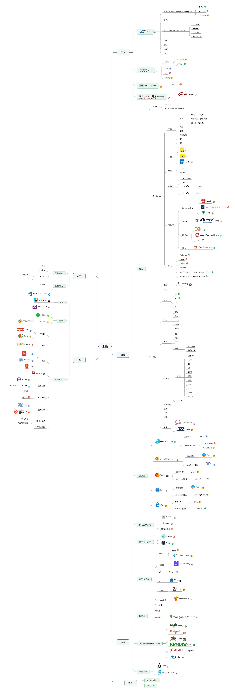

大前端技术体系
核心
网页行为：JavaScript
- ✅ 编码规范 thanks to airbnb 😂
- ⬜ JavaScript 简介
- ⬜ 变量提升(Variable Hoisting)、事件冒泡(Event Bubbling)、严格模式(Strict)
- ⬜ this
- ⬜ 闭包(Closure)
- ⬜ 原型(Prototype)与原型链(Prototype Chain)
- ⬜ JSON(JavaScript Object Notation)
- ⬜ 作用域(Scope)与作用域链(Scope Chain)
- ⬜ AJAX(Asynchronous Javascript And XML)
- ⬜ 跨域(Cross Domain)
- ⬜ 模块化(Module)
- ⬜ 事件循环(Event Loop)
- ⬜ 正则表达式(Regular expressions)
- ⬜ Web API(CustomEvent、WebSockets、Web Workers.etc)
ES5-
ES6+
- ✅ JavaScript 新特性 吴俊
图形
- ⬜ Canvas
- ⬜ WebGL
- ⬜ SVG
Web Component
- ⬜ Shadow DOM
TypeScript
- ✅ 编码规范 刘莹鑫
- ⬜ 类型(Type)
- ⬜ 接口、类、命名空间、模块
- ⬜ 装饰器
- ⬜ 声明文件
网页样式：CSS
- ✅ CSS 编码规范 刘燕
- ⬜ CSS 实战
- ⬜ BEM
- ⬜ 响应式和媒体查询
- ⬜ Sass 编码规范 刘燕
网页结构：HTML
- ✅ HTML 编码规范 刘燕
- ⬜ HTML 简介
- ⬜ HTML5 特性
概念
基本
- ✅ 前端开发必须掌握的基本概念 段美霞
- ⬜ 值 🆚 引用类型，栈 🆚 堆
- ⬜ 形参 🆚 实参，转译 🆚 编译
- ⬜ BOM 🆚 DOM
- ⬜ 对称加密 🆚 非对称加密
- ⬜ 逻辑像素 🆚 物理像素 rem 🆚 em pt 🆚 dp
- ⬜ 标准化组织
进阶
- ⬜ 字符编码(Character Encodings)
- ⬜ SOAP 和 RESTful 能做比较吗？
- ⬜ 开源协议
- ⬜ 命令式 🆚 声明式
开发周边
- ⬜ 命令行
- ⬜ JSDoc
- ⬜ Markdown
- ⬜ GitHub
- ⬜ 蓝湖
- ⬜ Fiddler
- ⬜ Chrome DevTools
- ⬜ PostWoman
- ✅ RAP2 入门 刘莹鑫
协议相关
- ⬜ OSI 模型
- ⬜ DNS
- ✅ HTTP 请求方法的异同 天下布武
- ⬜ HTTPS
- ⬜ 端口
- ⬜ URI 🆚 UDP
浏览器
- ⬜ 浏览器历史
- ⬜ 主流浏览器对比
- ⬜ 浏览器工作原理
JS 框架
Vue.js
- ✅ Vue.js2 最佳实践 天下布武
- ✅ Vue 组件开发及 NPM 发布（TS 版） 天下布武
- ⬜ SSR
Angular
- ⬜ Angular 组件开发及 NPM 发布
React
UI 框架
- ⬜ Element
- ⬜ Ionic
库
- ⬜ ECharts
- ⬜ D3
- ⬜ three.js
- ⬜ RxJS
跨平台
- ✅ PWA–下一代的 web 应用模型 曹芯萍
- ⬜ Cordova
- ⬜ Electron
- ⬜ Flutter？
- ⬜ Service Worker
服务器&操作系统&中间件
- ⬜ nginx 使用
- ⬜ Tomcat
- ⬜ IIS 添加 HTTPS
- ⬜ Redis
- ⬜ RabbitMQ
- ⬜ CentOS
Node.js
- ⬜ NPM
- ⬜ Nest.js
- ⬜ mongoose
- ⬜ socket.io
数据库
- ⬜ MongoDB
- ⬜ PostgreSQL
编辑器&IDE
- ⬜ VS Code
- ⬜ WebStrom
- ⬜ Xcode
- ⬜ Android Studio
持续集成&交付&部署
- ⬜ SVN
- ⬜ Git
- ⬜ 常用构建、静态分析工具及配置
- ⬜ Jenkins
- ⬜ Docker
监控
- ⬜ Sentry
- ⬜ New Relic
数据结构&算法
- ⬜ 时间复杂度、空间复杂度
设计思想&模式
性能
安全
- ⬜ JWT
管理
- ⬜ 招聘
- ⬜ 团队管理
- ⬜ 项目管理
- ⬜ PPT
- ⬜ Word
- ⬜ 设计说明书
其它
- ⬜ WebRTC
- ⬜ WebAssembly
- ⬜ Tensorflow.js
- ⬜ GraphQL
- ⬜ Serverless
大前端技术体系一张图

本文标题：大前端技术体系
本文作者：思路大前端团队
发布日期：2020-04-24
版权声明：本网站所有文章除特别声明外，均采用 知识共享署名-非商业性使用-禁止演绎 4.0 国际许可协议 进行许可，转载请注明出处！